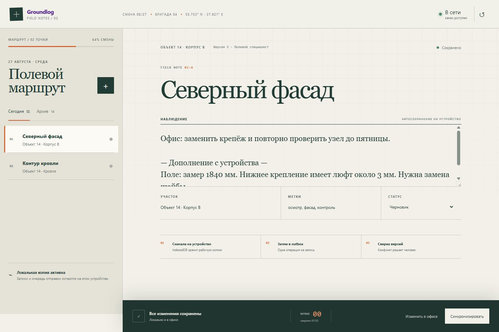
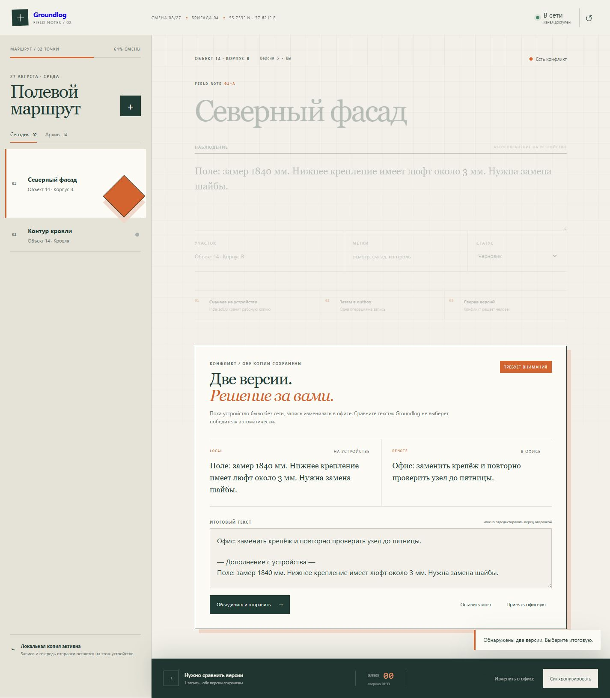
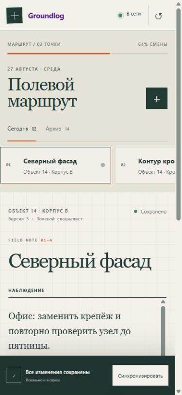

IndexedDB
Рабочая копия и outbox живут на устройстве. Поле отвечает мгновенно.
LOCAL SOURCEСвязь может пропасть. Запись — нет.
Полевой специалист работает без сети. Groundlog сохраняет всё на устройстве, а после подключения сверяет изменения с офисом — без тихих перезаписей.

Контекст
Полевые данные не ждут Wi‑Fi
На объекте сеть появляется рывками. Повторная отправка создаёт дубли, а параллельная офисная правка может незаметно стереть наблюдение специалиста.
Главное правило продукта: локальная работа всегда доступна, а конфликт никогда не решается за человека.
Архитектура доверия
Интерфейс показывает реальное состояние данных: где лежит копия, сколько операций ждёт отправки и почему нужна ручная сверка.
Рабочая копия и outbox живут на устройстве. Поле отвечает мгновенно.
LOCAL SOURCEПовторные правки складываются в одну операцию со стабильным ID.
QUEUED CHANGEСервер принимает совпавшую версию или возвращает обе копии.
EXPLICIT RESULTКонфликт
Обе версии остаются видимыми
Инспектор изменил запись без сети. В это время офис обновил тот же осмотр. При подключении Groundlog не выбирает «последнюю» правку — показывает локальный и офисный тексты рядом.


Интерфейс в поле
На телефоне журнал становится последовательным рабочим листом: выбор точки, наблюдение, статус сохранения и синхронизация в зоне большого пальца.
Итог / честная граница продукта
Service Worker кэширует оболочку, но не маскирует сетевые операции. IndexedDB хранит локальное состояние. Сервер использует ревизии и идемпотентные операции.
Демо честно ограничено одной командой и локальным сервером: без заявлений об авторизации, шифровании и гарантированном background sync, которых здесь нет.